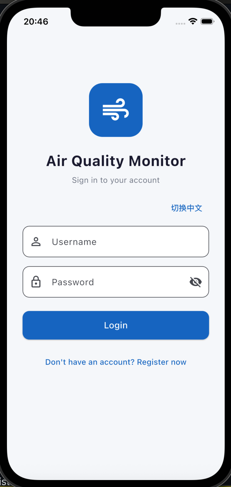
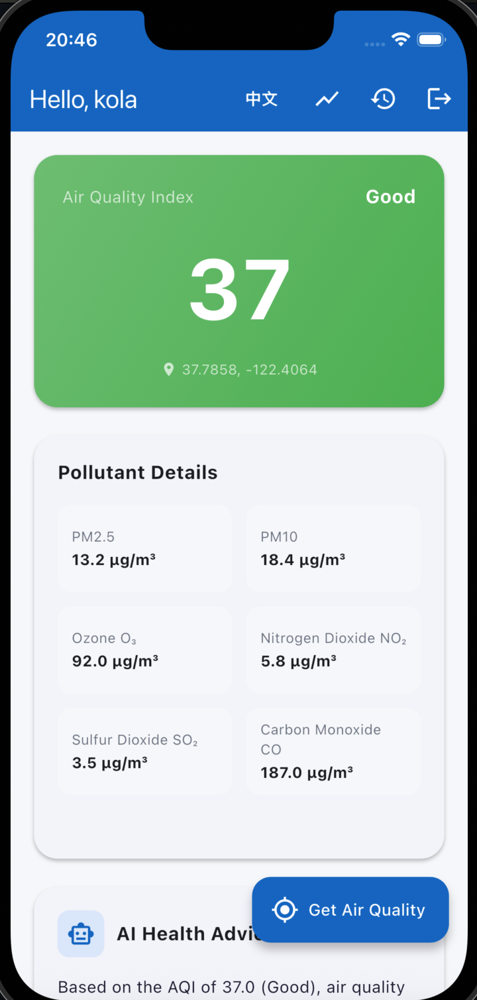
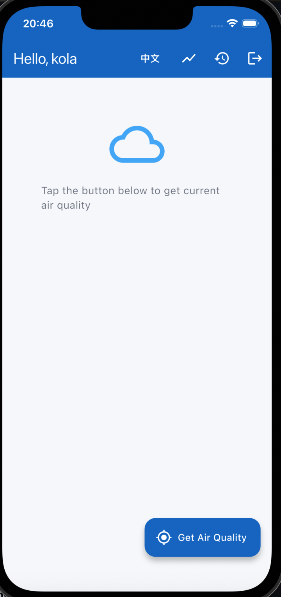
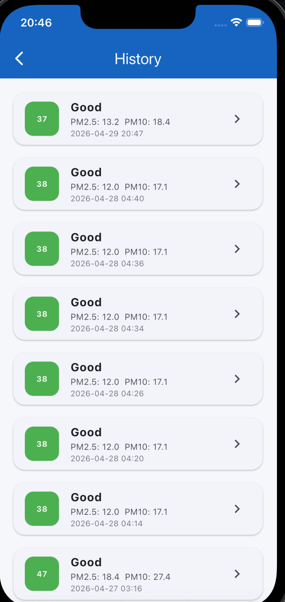
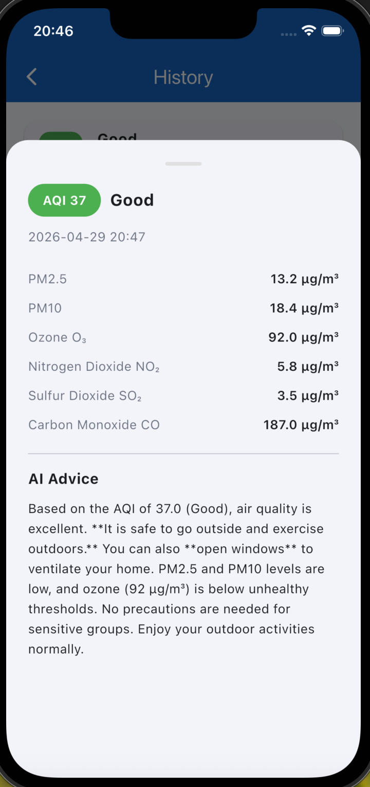

The user wants to go outside but is unsure about the air quality. They open the app, log in, tap Get Air Quality, and receive current AQI, pollutant details, and AI health advice. They can then check weekly trends and history records to understand how the environment changes over time.
Screenshots





